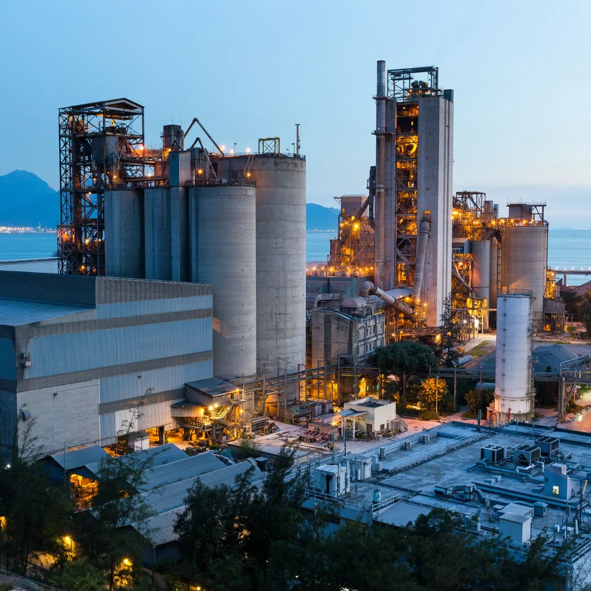

Las cinco tribus de la IA: distintas formas de aprender y decidir
Qué aporta cada tradición del aprendizaje automático y qué conviene considerar antes de combinarlas en la industria.
Leer artículo ↗BLOG / CONOCIMIENTO INDUSTRIAL
Planeación, tecnología y perspectiva.
Lecturas para entender mejor tu operación.

Cómo conectar demanda, capacidad y secuencias para construir un plan que tu planta pueda ejecutar.
Leer artículoQué aporta cada tradición del aprendizaje automático y qué conviene considerar antes de combinarlas en la industria.
Leer artículo ↗Cómo definir el problema, los datos y el éxito antes de elegir una tecnología.
Leer artículo ↗Planeación y programación: dos decisiones distintas que necesitan trabajar juntas.
Leer artículo ↗El papel de los recursos, la demanda y el seguimiento en una operación coordinada.
Leer artículo ↗Lectura de archivo sobre cadenas de suministro, digitalización y capacidad productiva.
Leer artículo ↗Conectar equipos es el comienzo. Sincronizar sus tareas convierte los datos en un plan.
Leer artículo ↗DEL CONOCIMIENTO A TU PLANTA